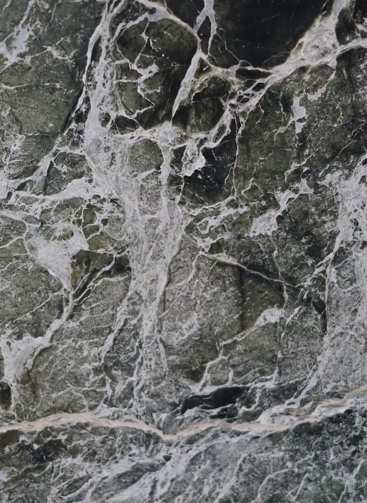
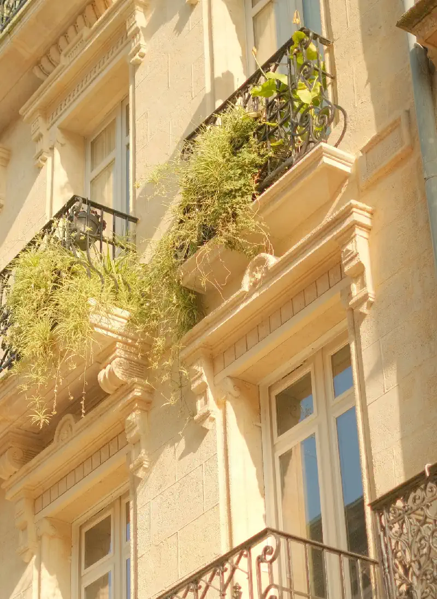

Belleville QPV — Quartier Priorisant la Vie
Belleville QPV — Quartier Priorisant la Vie

Sous les yeux
Sous les yeux

Ce que la Ville murmure
Ce que la Ville murmure
Photographe des pavés et des regards qui s’éclipsent